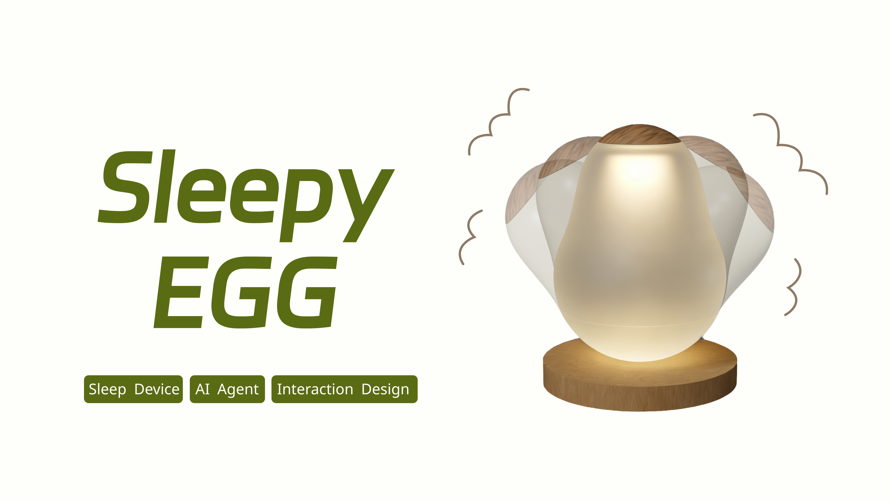
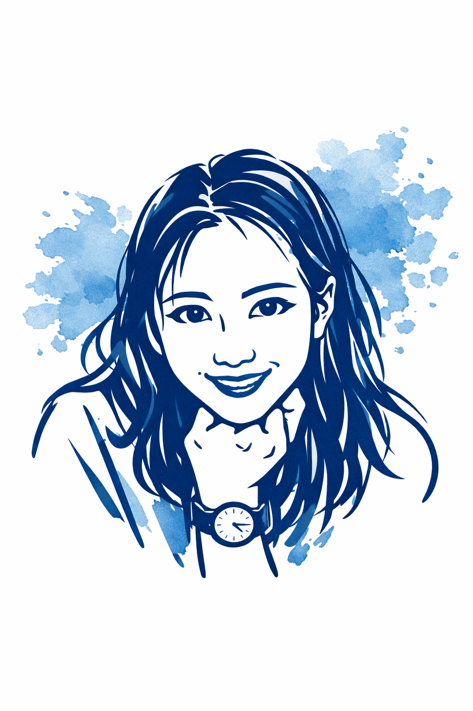
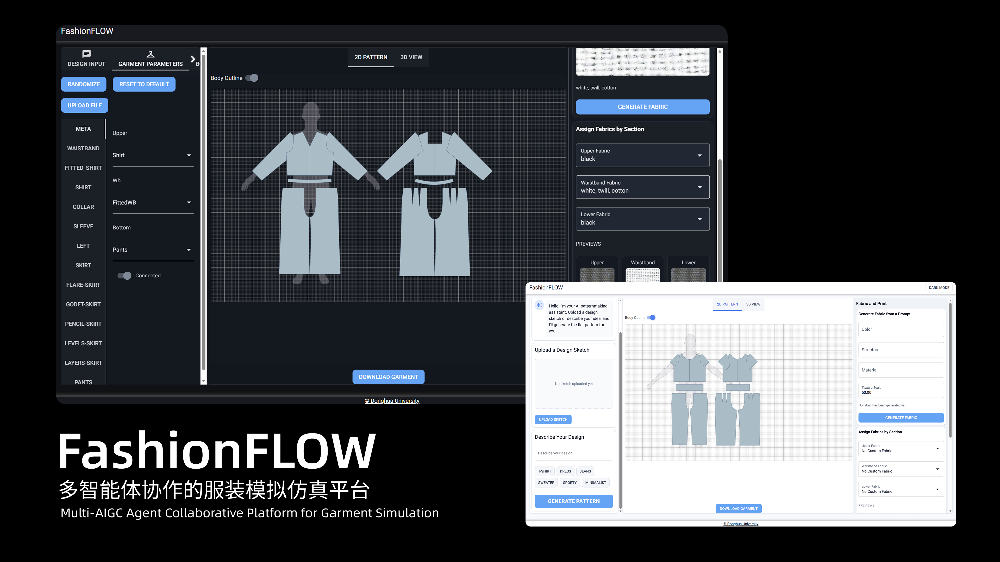
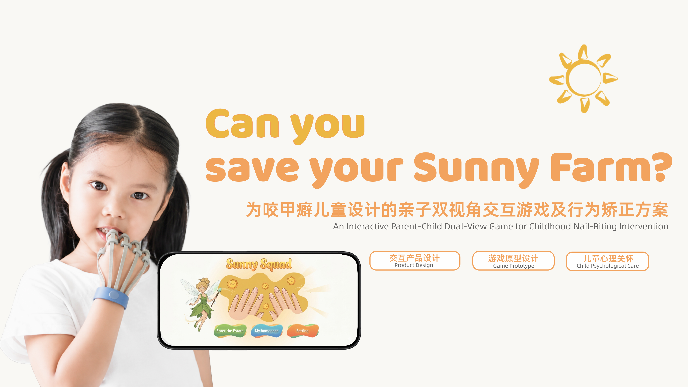
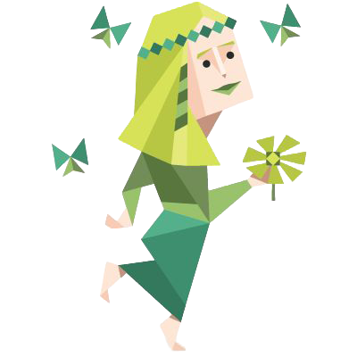
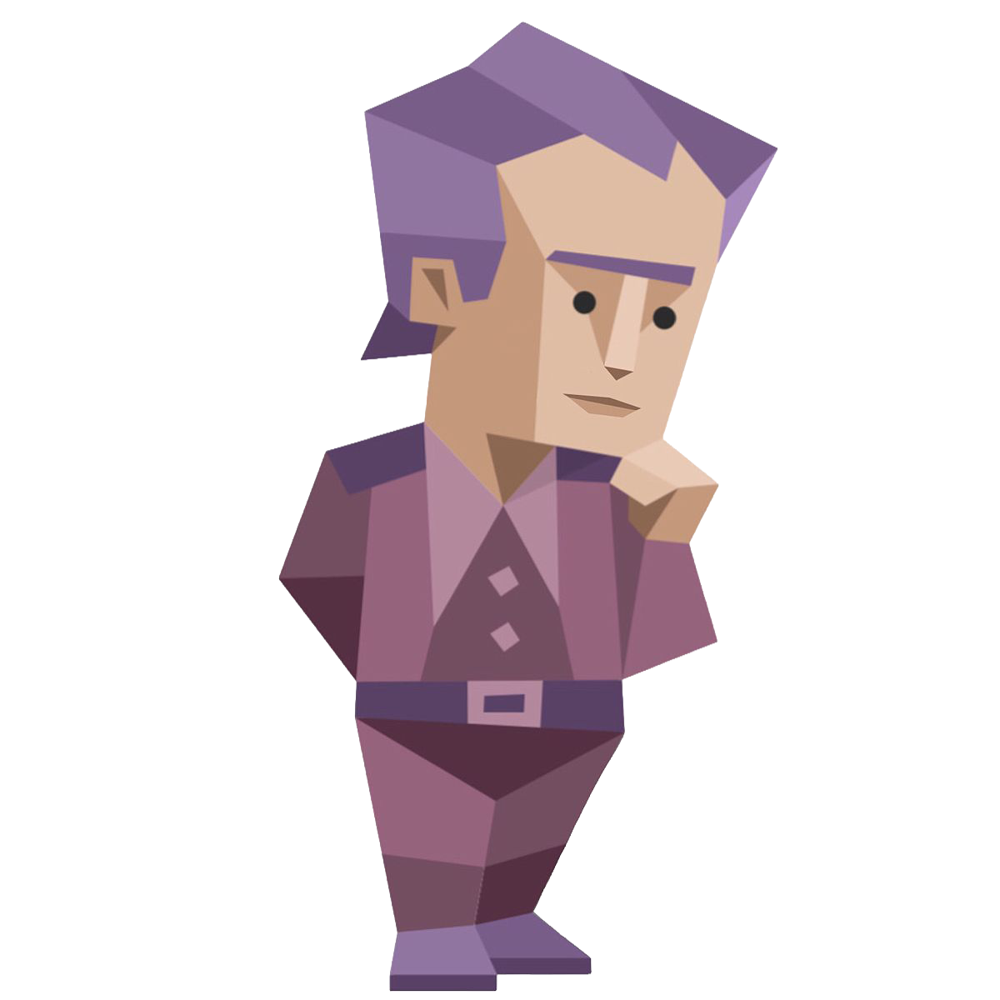
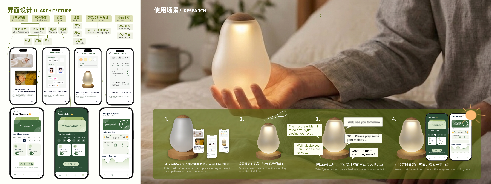

01 · 2025—2026
SleepyEGG
一款为焦虑型失眠者设计的 AI 冥想睡眠伴侣。
热爱旅行、阅读、影音和捣鼓一些奇怪的设计与技术。这里记录我的项目、观察，以及那些从一个小念头逐渐长成的作品。

让每个项目成为轨迹上的一颗节点。封面、编号与类型共同构成清晰的浏览节奏。

一款为焦虑型失眠者设计的 AI 冥想睡眠伴侣。

集成多智能体协作的智能服装模拟仿真平台。

基于 BFRB 患者心理行为疗法所做的设计思考。


自 2023 年进入东华大学服装与艺术设计学院以来，我系统学习了服装设计与工程专业课程，训练内容覆盖数学基础、服装材料与人体工效、结构工艺、数字化设计、科研方法、市场营销以及人工智能辅助设计等方向，并在跨学科课程学习中不断强化研究与设计并重的能力结构。
本科阶段，我持续将设计学习与科研实践结合，重点围绕生成式模型在服装设计场景中的应用，以及 AI 辅助设计平台的原型构建与落地路径展开探索。
除课堂与科研训练外，我也持续通过竞赛、社会实践、暑期课程以及个人作品开发扩展自己的观察视角与项目执行能力。
我希望在研究生阶段继续主修交互设计与 AI 辅助设计，将设计研究与技术实践结合起来，进一步深入大健康、心理健康、时尚与纺织服装等议题。
以温柔摇摆的不倒翁形态，通过个性化睡前冥想引导与科学节律闹钟，陪伴焦虑型失眠者安稳入眠、清爽醒来。
2025.12 — 2026.04
项目详情采用清晰、稳定的方块信息布局。不同内容按正常阅读顺序向下展开，线条流动只属于项目总览，不再干扰单个项目的内容表达。
成果图片以完整宽度展示，保持内容本身的视觉重量。

上海 · 东华大学延安路校区 · +86 19857125443